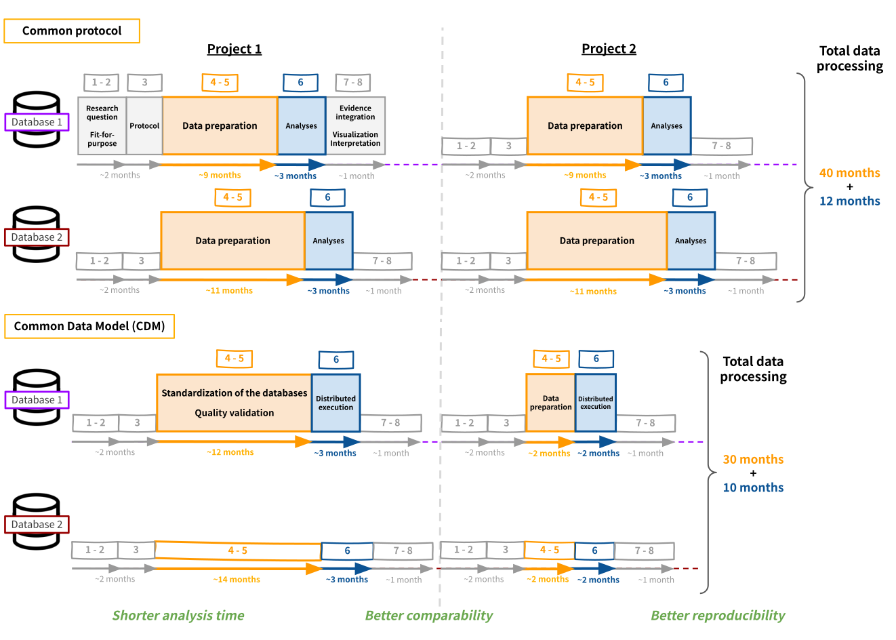

Diverse populations and settings
Evidence from one country may not represent other populations, reimbursement systems, care pathways, or prescribing practices.
Home / About
About IMPRESIVE
IMPRESIVE is research infrastructure for preparing international multi-database studies across data, methods, collaboration, and interpretation.
International Multi-database study PREparedness: Databases Standardization, Integration and Visualization for timely Evaluation on Disease and Treatment.
The programme prepares local data environments for common study questions, transparent implementation, quality review, distributed analysis, and contextual interpretation. It does not require person-level partner data to be centralized.
Preparation makes assumptions, data constraints, methods, local responsibilities, and interpretation boundaries explicit before evidence is combined.
Evidence from one country may not represent other populations, reimbursement systems, care pathways, or prescribing practices.
Multiple data sources can support rarer events, subgroups, and more precise estimates when definitions and follow-up are suitable.
Cross-country comparison reveals whether patterns are consistent and where clinically or operationally meaningful differences appear.
Comparing contexts helps teams judge whether evidence may inform decisions beyond the setting in which it was first generated.
What we bring
We are the data analytics team at the Population Health Data Center (PHDc), National Cheng Kung University. Through IMPRESIVE, we work with data partners across countries to prepare diverse healthcare databases for multinational real-world evidence studies.
Our work spans feasibility assessment, protocol and variable specification, data standardization and CDM implementation, quality validation, common analytical programming, distributed analysis, and cross-database interpretation. We provide the methods, code, quality-assurance processes, and analytical support needed to move from a research question to consistent, reviewable, and decision-ready evidence—while person-level data remain under local control.
The IMPRESIVE journey
Study bone-targeting-agent utilization and effectiveness in breast, prostate, and lung cancer with bone metastasis.
Before the cases
The BTA project studied utilization patterns and effectiveness of bone-targeting agents in breast, prostate, and lung cancer with bone metastasis. A standardized protocol was delivered to each data partner.
Substantial work was required to align protocol details, ensure appropriate variable definitions at every site, and independently develop analytic programs at each location.
The next programme stages moved from protocol-only alignment toward common data models and shared analytic programs, while retaining local implementation and review.
Use hospitalized ASCVD cohorts to align definitions and examine baseline characteristics and recurrent risk.
Evaluate consistency across data-model routes and follow-up choices, then apply the framework to atopic dermatitis and prurigo nodularis.
Present international collaboration and transportability as the next programme questions.
Use well-characterized settings to examine how evidence may inform another population while preserving study-specific feasibility and interpretation.
Aim. Examine whether treatment-effect estimates from Taiwan can inform a Japanese setting without treating population differences as noise.
Design. Retrospective target-trial emulation in Taiwan NHIRD and Japan DeSC, comparing observed estimates with estimates transported by a model developed in Taiwan.
Setting. Patient-level data remain in the approved local environments; the public page presents the study design and current aggregate result summaries.
Build new partnerships across countries, data environments, and research areas, creating opportunities for shared studies, methodological development, and broader applications of the IMPRESIVE framework.
Join usThree-pillar navigation map
Understand partner environments, coding context, and whether a study question is feasible.
See how common models, reusable programmes, and quality checks make local execution comparable.
Review cross-setting findings, uncertainty, and the interpretation boundaries behind decisions.
Evidence → context → application
The shared analytical interface
A common data model (CDM) reorganises local data into a shared structure and set of definitions, allowing the same analytical program to be executed across participating databases while person-level data remain within each partner environment.

The role map separates organizational coordination, application support, and research infrastructure. PHDc is the primary public contact for this website.
Connects organizations, coordinates multinational collaboration, and serves as the primary public contact for IMPRESIVE.
Supports collaboration applications within the wider ecosystem when that route is used by an AsPEN member initiative.

Provides the study-preparedness framework, standardized structures, reusable analytic programs, and evidence workflow.
Start with the scientific reason for working across countries and data environments.